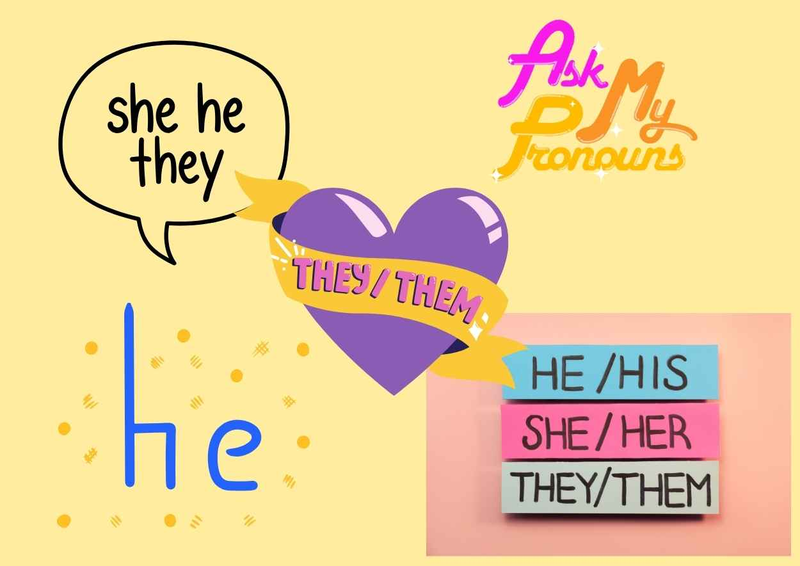

In our last class, we learnt Pronouns are words that take the place of nouns. They help us avoid repeating the same nouns over and over again.
For example: He, She, I, My, Me, We, Mine, They, Them, etc.
Today we will learn more types of pronouns while reading the other half of the story.